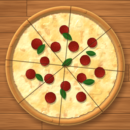
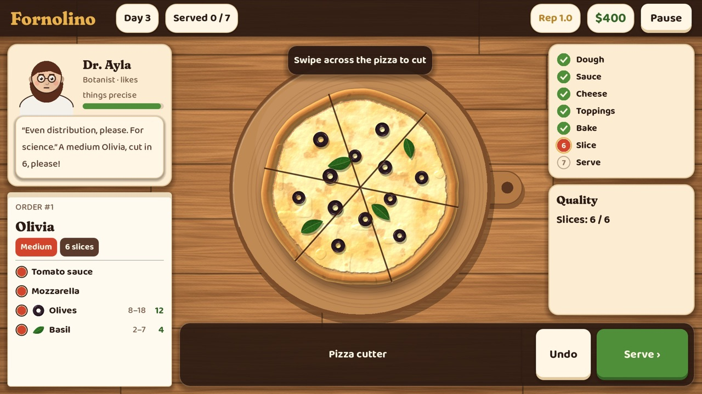

iPhone · iPad · Android · Steam
Fornolino
Stretch, sauce, bake and slice handmade pizzas in a cozy neighborhood pizzeria.

- Stretch real dough, paint tomato sauce, grate mozzarella and place every topping by hand
- Bake in a wood-fired oven and slice it clean with the pizza cutter
- Serve the regulars of Via Lunetta, grow your pizzeria, unlock ingredients and upgrades
- Story, Relaxed and Challenge modes · English and Turkish · plays fully offline
Türkçe
Sıcacık bir mahalle pizzacısında el yapımı pizzalar aç, sosla, pişir ve dilimle. Hamuru gerçekten aç, domates sosunu sür, mozzarellayı rendele, odun fırınında pişir ve Via Lunetta'nın müdavimlerine servis et. Tamamen çevrimdışı oynanır.
Privacy Policy / Gizlilik · Terms of Use / Kullanım Koşulları · Support / Destek